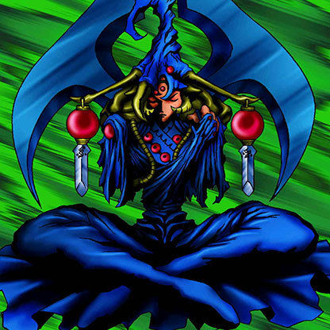

Maha Vailo

Description: "When in the face-up, defense position, the effect of all Power-up Cards are boosted an additional 200 points."
STATS
ATK: 1550
DEF: 1400DECK COST
Deck Cost per Card: 35EFFECT NOT IMPLEMENTED
Fusion List (2 Possible Fusions)
- Maha Vailo + The Immortal of Thunder = Kaminari Attack
- Maha Vailo + Thunder Dragon = Kaminari Attack